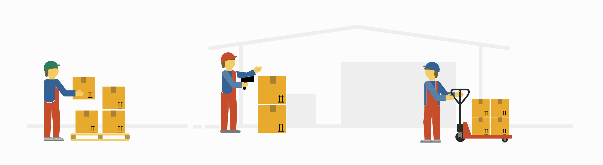
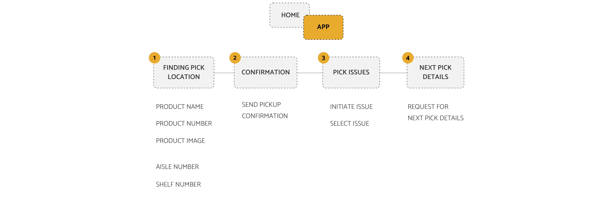
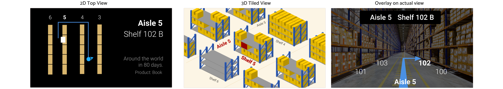

AR for Order Picking.
Designed an AR application to help order pickers increase their efficiency
The project was done as a part of the Ubiquitous Computing class at Georgia Tech. In a team of four, we designed and developed an AR application and conducted a comparitive study between paper-based assistance for order picking vs. head-mounted displays.
Duration: Feb 2018 - April 2018
Order Picking in Warehouses
Order Picking is the process of finding and picking items inside a warehouse and it accounts up to 60 percent of the operational costs for warehouse. 50+% of warehouse labor resources are typically involved in picking, packing and shipping outbound orders.
“Pick path” refers to the route a picker takes through the picking area to complete his or her picking tasks. Travelling on the pick path between multiple orders accounts for majority of the operational costs because of the time associated with navigation and other logistics and optimizing the pick path can provide quantifiable savings in operating costs.
Need of the hour
Due to the impact that its operational costs have on businesses, a more time efficient and accurate order picking process became the need of the hour. Such an intervention shall also decrease the fatigue of workers and hence prevent man-made errors.
The proposal
Baumann's research proves that head-mounted displays can increase the speed of order picking by 37% compared to paper based method. We propose a Augmented Reality (AR) based solution which will generate optimized pick paths and navigate the picker to the order using AR elements and visual cues. By generating the shortest pickpaths between picks, re-routing them automatically and showing the order-picker the
Process Overview
Information display and User Flows
As a designer, I was responsible for designing the information architecture and the core flows for all the user scenarios.
Idea Generation
We came up with 3 different designs for navigation - the 2D top view, 3D tiled view and a view with overlay on actual camera vision.
After several design critiques, we chose to use an hybrid of the 2d top-view and the isometric projection. Users preferred the 2D top view while navigating between aisles and shelves, however an orthogonal or an isometric view was preferred for an finding the product on the shelf.
User Interface and Interactions
The next step was to design the UI for all the core scenarios. The whole product uses 3 simple touch-based interactions - Tap, Swipe down and Swipe left/right. Google glass is also capable of voice inputs, however the ambient noise level in warehouses makes it difficult to use voice interactions.

Usability Testing
The next step was to test the hypothesis that head-mounted displays can make the order picking process more efficient and the accurate. We ran a comparitive study where we recruited users and asked them to perform picking tasks using paper and AR. Users were asked to think aloud during the test while a note taker noted down the observations. Efficiency was measured by the time taken to complete a pick list and accuracy was measured by the number of correct items picked.

The Re-design
Since the 2D top view had issues, we decided to implement a 3D tilted view midway.
Observations and Evaluation
The quantitative evaluation criteria for the usability test were efficiency, which will be the pick time for a particular book and the accuracy, which will be measured by checking how many correct items were picked. Some qualitative observations are mentioned below -

The average time to pick up a book by Pick by AR was 5.67 secs with 100% accuracy.

The average time to pick up a book using Pick by Paper was 10 secs with 100% accuracy.
Conclusion
Traditional paper pick lists gives picker too much mental pressure since the letter and number based location require the picker to “translate” them into the actual location in the warehouse. By calculating the shortest path as a travelling salesman problem on the server, rearranging the items in a pick list contextually and validating if the item picked is right, we allow to the picker to improve efficiency and accuracy.
Combining all these factors, we will be able to show how plausible it is for warehouses to adopt such system in terms of its saving in operating cost and the infrastructure expense it occurs.